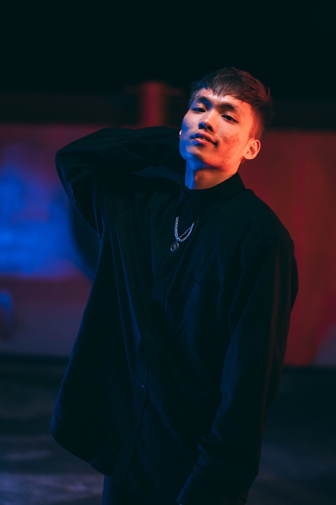
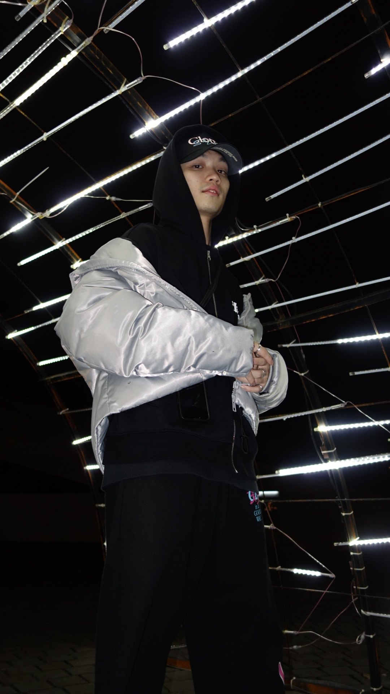

About / 關於
MOVE WITH
INTENTION.
林奕寬，小白，Hip Hop 舞者、編舞與舞蹈教師。具大型演唱會、音樂節、MV、職業運動開場及商業演出經驗。
Selected Experience / 精選經歷
ON STAGE
從大型演唱會、音樂節到 MV 與職業運動開場，持續累積不同規模的舞台經驗。
-
2025
5566 · One Love Asia Festival
新加坡演出
舞者黃氏兄弟 · 返校日8:無限
演唱會
舞者5566 · S2O Taiwan 潑水音樂節
舞者展榮展瑞 ·《限時動態》音樂派對演唱會
舞者文總 · WE ARE 我們的除夕夜
舞者洪暐哲 WAJI · 跨年演出
舞者 -
2024
五月天 · 回到那一天 香港演唱會
嘉賓 ENERGY
舞者中華職棒 · 大巨蛋開場秀 ENERGY
舞者洪暐哲 WAJI · 耶誕城演出
舞者黃氏兄弟 · 返校日7 演唱會
舞者ENERGY · 復出發片簽唱會
舞者怪物星人 · 巡迴簽唱會
舞者 -
2023
溫妮 · 超級巨星紅白藝能大賞
除夕節目演唱會
舞者溫妮 · 璞園領航猿開場表演
舞者 -
2022
溫妮 · 劍湖山跨年演出
舞者溫妮 · WINNIBAO 演唱會
舞者溫妮 · D.C.A.Y不想理你 MV
舞者溫妮 · 矮還愛 MV
舞者溫妮 · 我不知道你知不知道我知不知道你 MV
舞者P League 台新夢想家主場開場秀
TPD 舞者 -
2020
美粒果 · 高爾軒《你搖幹嘛》廣告
舞者ABL 臺北富邦勇士籃球隊
主場開場秀
Competition / 比賽成績
RESULTS
HHI Taiwan
環球百人
街舞大賽
Taiwan Dance
Delight
ISDF
國際街舞藝術節
Model Profile / Casting 資料
THE
PROFILE
- Height
- 170 cm
- Weight
- 57 kg
- Measurements
- 85／75／98 cm
- Shoes
- US 8／26 cm
- Style
- Hip Hop

Teaching / 教學經歷
PASS IT
FORWARD.
- Start From Zero常態課師資
- A Space常態課師資
- 台北市立內湖高中拂風手語表演社師資
- 新北市立永平高中芷韻手語社師資
- 台北市立大同高中牽言手語社師資
- 2022 LUMI SUMMER SHOW成果展編排老師
Gallery / 形象圖集
OFF STAGE
夜色、城市、海岸與日常。點擊照片可放大查看。